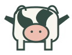

Több állat, kisebb hozam
A túlterhelt legelő már nem ad elegendő táplálékot. A történet szerint egy tehén napi tejhozama 1 literre esik vissza.

18tehén ugyanazon a legelőn
1 litertej egy tehéntől naponta
2 literegy gazda napi hozama
Gondold végig: Hogyan lehet, hogy mindenki több tehenet tart, mégis mindenki kevesebb tejet kap, mint az elején?